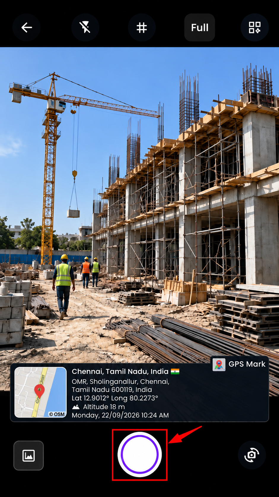
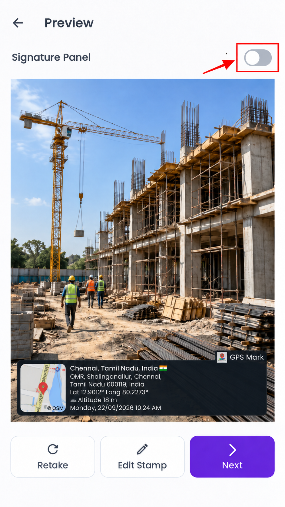
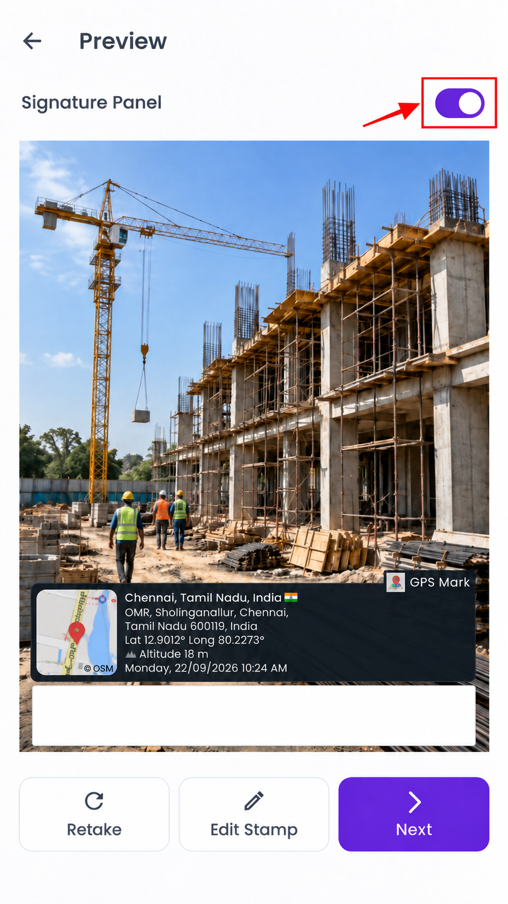
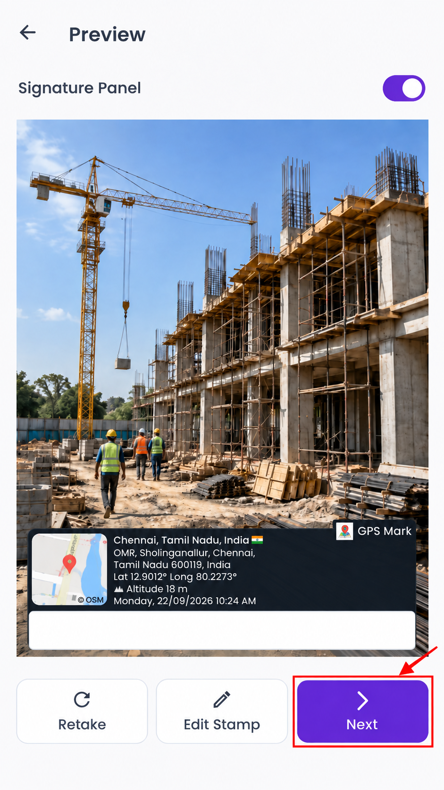

What is the Signature Panel and how do I use it?
The Signature Panel adds a blank white space to your captured photo for a signature. It is useful for land-site visits, inspections, work-completion proof, and document-related photos. This option is turned off by default, so you can use it only when needed.
Step 1: Choose a stamp and take a photo
Select the stamp template you want, then capture the photo from the Camera screen.

Step 2: Use the Signature Panel on the preview screen
After taking the photo, the Preview screen lets you check the image before saving it.
Retake: Removes the current photo and returns to the Camera screen so you can take another one.
Edit Stamp: Lets you select or customize the stamp before saving the photo.
Signature Panel: Turn this option on to add a blank white signature space below the stamp. The preview updates immediately.


Step 3: Save the photo
Tap Save Photo and choose where you want to save it. The saved photo will include the selected stamp and the Signature Panel when it is turned on.
